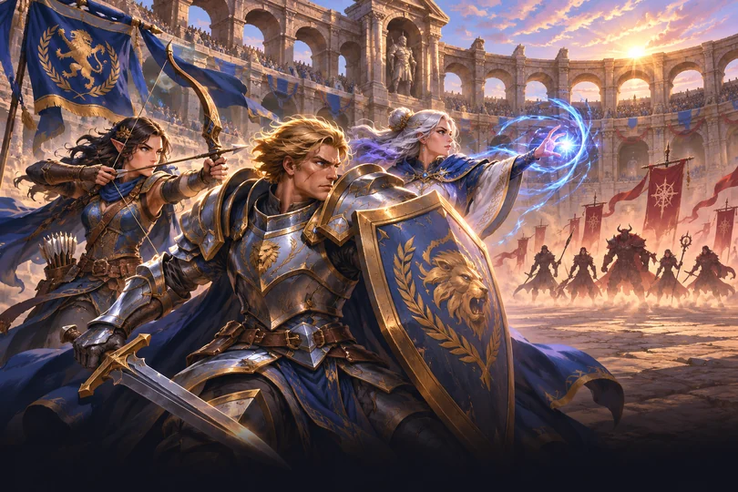
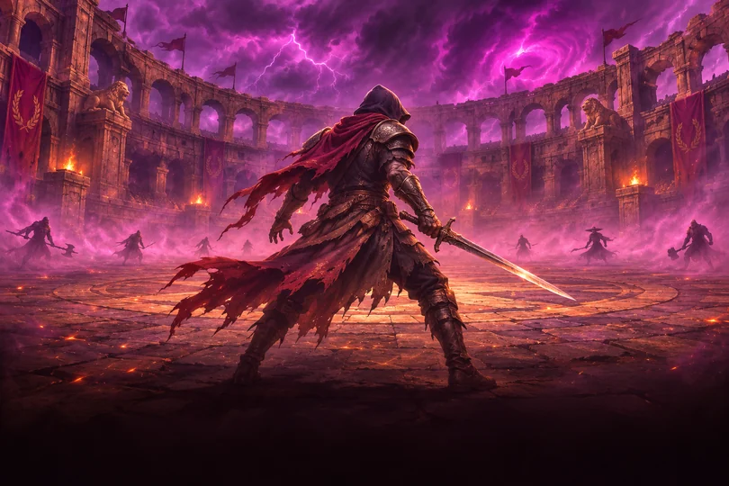
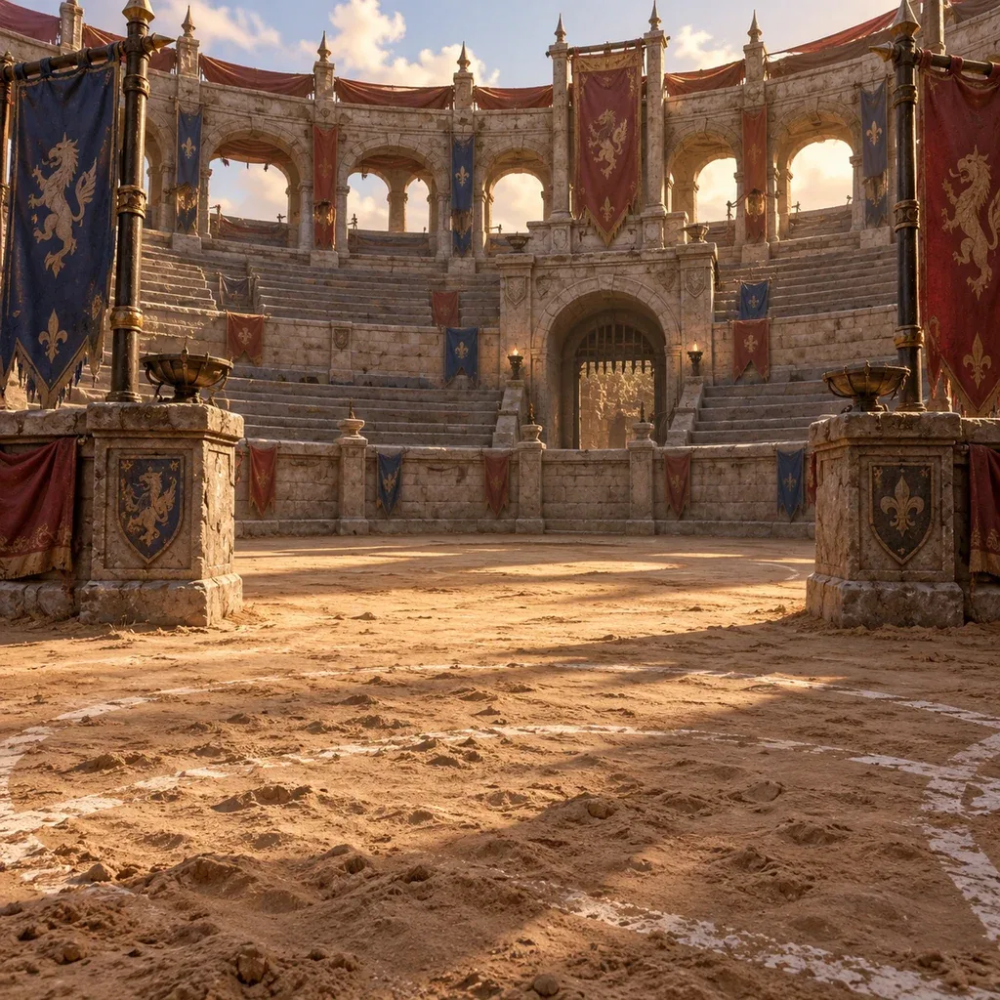

THE TWIN ARENA
ศึกเขาวงกต · โหมดทีมและเอาตัวรอด



เฉพาะแมตช์จัดอันดับเท่านั้นที่คิดแต้มสะสม การออกจากแมตช์ก่อนจบอาจถูกหักแต้มและระงับการเข้าคิว
ห้องสาธารณะ
ห้องจัดอันดับทีมจัดเอง
◆ ฐานใหญ่ · □ ฐานย่อย · ● ทีมเรา · ◎ ตำแหน่งคุณ
แตะหมายเลขป้อมเล็กเพื่อเริ่มวาร์ป 5 วินาที